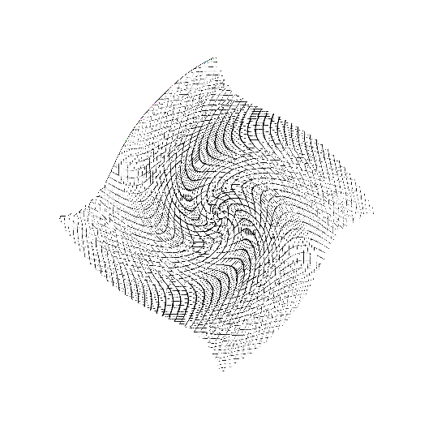

CS 184: Computer Graphics and Imaging, Spring 2019
Project 1: Rasterizer
Fanyu Meng, CS184-adh
Overview
In this project, we built a crude rasterizer based on triangles. We can use triangles to create a picture, or
apply textures to a surface give a transform between the image coordinate and the texture coordinate. We also
applied some antialiasing methods for sampling, in both basic triangle rendering and texture sampling.
Section I: Rasterization
Part 1: Rasterizing single-color triangles
The way we rasterize a triangle is as follows:
- Find the bounding box of the triangle. The bounding box is defined as the rectangle from
(x_min,
y_min) to (x_max, y_max). x_min is the minimum x coordinate of the
vertices, rounding down to the nearest integer; x_max is the maximum x coordinate rounding up.
Same thing applies to the y coordinate;
- For each pixel center in the bounding box, we test if the point is in the triangle using the naive normal
vector method or using Barycentric coordinates;
- If the point is in the triangle, we send the according color to the frame buffer. This color could be a
given color or sampled from a texture.
The runtime of the algorithm is $O(NW_\text{max}H_\text{max})$, where $N$ is the number of triangles,
$H_\text{max}$ and $H_\text{max}$ is the maximum width and height of the bounding boxes of the triangles since
we are going through every pixel in each of the bounding boxes.
Aliases while using the default settings.
We optimized the algorithm by changing the naive point in triangle test using Barycentric coordinates. Since
$\alpha + \beta + \gamma = 1$ in Barycentric coordinates, we don't need to compute $\gamma$ directly and roughly
saves about $1/3$ of the runtime. This is more obvious for larger triangles. The following time table is taken
from rasterizing basic/test5.svg:
Naive method
Time used with 1x1 super-sampling: 0.014821s
Time used with 1x1 super-sampling: 0.014997s
Time used with 1x1 super-sampling: 0.007087s
Time used with 1x1 super-sampling: 0.006630s
Time used with 1x1 super-sampling: 0.003994s
Time used with 1x1 super-sampling: 0.003177s
|
Barycentric coordinates
Time used with 1x1 super-sampling: 0.009332s
Time used with 1x1 super-sampling: 0.009665s
Time used with 1x1 super-sampling: 0.004028s
Time used with 1x1 super-sampling: 0.003269s
Time used with 1x1 super-sampling: 0.002295s
Time used with 1x1 super-sampling: 0.001488s
|
The time complexity improvement for large enough triangles is roughly 1/3.
Part 2: Antialiasing triangles
We apply supersampling by dividing each pixel into $n \times n$ sub-pixels and apply color sampling for each
sub-pixel. The color of the pixel is the average of the color of the $n \times n$ sub-pixels. This is helpful to
anti-alias the picture by adding a color gradient between hard edges.
|
No supersampling.
|
Degree 2 supersampling.
|
Degree 4 supersampling.
|
Part 3: Transforms
A robot running.
By applying additional rotations on whole body and the limbs and adjust the amount of translation, the robot looks
like it's running, at least it should supposedly look like it's running. This is the best I can do and what it is is
what it is :(
Section II: Sampling
Part 4: Barycentric coordinates
The RGB color intensity is the Barycentric coordinate w.r.t. each vertex.
Barycentric coordinate computes the distance from a given points to each sides as we can see from the graph.
A color pallet.
Part 5: "Pixel sampling" for texture mapping
Texture sampling is to sample the color of a given point from a texture, given the corresponding texture
coordinates. We sample from the nearest integer coordinate if we are using the nearest method, and use linear
interpolation if we are using the bilinear method. By linear interpolation we mean sample from the four
integer-coordinate corners around the given point, and find a linear combination of the colors. The closer the point
is to one of the corner, the color of the corner will have a stronger influence.
Nearest, no supersampling.
|
Nearest, degree 4 supersampling.
|
|
Bilinear, no supersampling.
|
Bilinear, degree 4 supersampling.
|
Even though we applied supersampling, rendering this picture using nearest texture sampling still have jaggies. This
is due to the fact that the texture contains more information in 1 image pixel in this picture.
There will be a large difference between the two methods if the scale between the image coordinate and the texture
coordinate is far from 1:1. If the scale of the image coordinate is relatively smaller, nearest method will show
Moire patterns and jaggies vice versa.
Part 6: "Level sampling" with mipmaps for texture mapping
Level sampling enable us to sample from textures with different precision levels. If the scale of the image
coordinate is relatively smaller, we can sample from a lower-res texture and avoid Moire patterns.
Using mipmap allow us to achieve coordinate-relative antialising at the cost of roughly 1/3 more memory and 4 times
texture reading time. If we also apply linear interpolation for mipmap levels, this is 8 times texture reading time.

L_ZERO, P_NEAREST
|
L_NEAREST, P_NEAREST
|
L_LINEAR, P_NEAREST
|
L_ZERO, P_LINEAR
|

L_NEAREST, P_LINEAR
|
L_LINEAR, P_LINEAR
|
Section III: Art Competition
Part 7: Draw something interesting!
This is a low-poly picture of my girlfriend's cat Nines when she was a few months old, when she doesn't know that
thing called shyness and doesn't rush to the back of the shelf if she saw me.
The picture is created through an online low-poly svg converting
tool. The svg file was modified through a script (src/svg_convert.py) that convert color values to
parse-able hex values, remove border lines and scale to the correct size.